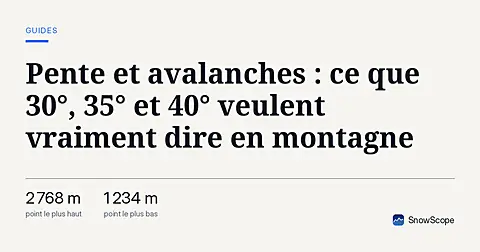

Bulletins neige · Régions de neige
Régions de neige: Combien de neige les montagnes vont-elles gagner ? Notre tableau montre les stations où la prévision annonce le plus de neige …
À la une

Le détecteur de sommets de SnowScope est une application gratuite pour identifier les sommets : pointez votre téléphone vers les montagnes et il nomme les sommets, avec leur altitude, leur distance et le temps de montée. Nos tests : 98 % des sommets affichés sont réellement visibles, et sur de vraies photos il a ramené des erreurs de boussole allant jusqu'à 105° à 0,15°. Gratuit avec 3 noms, tous les sommets pour 0,99 € une seule fois.

Nous avons comparé la neige du 10 novembre avec la neige la plus épaisse de chaque hiver, dans 46 stations de ski et sur 46 hivers. Un début enneigé aide, mais moins que beaucoup de skieurs ne le pensent.

Courmayeur en tête du pronostic avec 88 cm en 72 heures ; l'épaisseur de neige atteint 142 % de la normale pour mi-novembre selon les données du 15 novembre.

Le manteau neigeux de La Grave a gagné 17 cm en une semaine pour atteindre 43 cm le 14 novembre, avec une prévision de 61 cm supplémentaires dans les 72 heures à venir alors qu'un système se déplace sur les Alpes.

La neige au 3 novembre 2026 : Kendall Mountain 53 in (134 cm) après une tempête, Big White 91 cm, les Alpes jusqu'à 55 cm à Bonneval-sur-Arc. Modèle et mesures.
Poudreuse du week-end: Prévisions neige à 72 heures : La Grave +110 cm (19 novembre)
Combien de neige les montagnes vont-elles gagner ? Notre tableau montre les stations où la prévision annonce le plus de neige fraîche dans les 24 prochaines heures et jusqu'au 22 novembre, en Europe, au Maroc et en Amérique du Nord, avec la limite pluie-neige. La neige en montagne, c'est de l'eau mise de côté pour le printemps : ce qui tombe maintenant alimente plus tard rivières et barrages.
Europe et Maroc
Pour La Grave (France), la prévision donne 47 cm dans les 24 heures et 110 cm en 72 heures, avec une limite pluie-neige proche de 2 900 m. Alpe d'Huez Grand Domaine (France) devrait recevoir 39 cm dans les 24 heures et 105 cm en 72 heures ; la limite pluie-neige se situe vers 2 500 m. Pour Orelle (France), la prévision donne 52 cm dans les 24 heures et 103 cm en 72 heures, avec une limite pluie-neige proche de 2 600 m.

Choisissez une région, vos dates, votre budget et ce qui compte ; chaque station est classée avec la neige probable au départ, le forfait, l'hôtel et les repas par personne, les chalets à réserver, et un mode jeu.

Combien de neige les montagnes vont-elles gagner ? Notre tableau montre les stations où la prévision annonce le plus de neige fraîche dans les 24 …



Une carte des pentes des Grands Montets et de sept autres domaines skiables montre quelle part du terrain dépasse 30°, 35° et 40°, et pourquoi ce seuil compte pour les avalanches.

Chaque jour, nous listons les stations qui devraient recevoir le plus de neige fraîche, dans les 24 prochaines heures et jusqu'au 13 novembre, en …
Nous avons comparé la carte de hauteur de neige SnowScope à 2 012 stations de mesure : RMSE 7,7 cm, biais -0,5 cm, neige ou pas de neige juste 88 % du temps. Ce qui marche, ce qui ne marche pas encore, et la suite.

Notre tableau quotidien suit la neige à venir : les stations où la prévision en annonce le plus dans les 24 prochaines heures et jusqu'au 12 …


Quelles stations ont presque toujours de la neige ? Nous avons étudié 46 hivers passés (1980-81–2025-26) pour chaque station de notre carte et compté …

Chaque jour, nous listons les stations qui devraient recevoir le plus de neige fraîche, dans les 24 prochaines heures et jusqu'au 6 novembre, en …